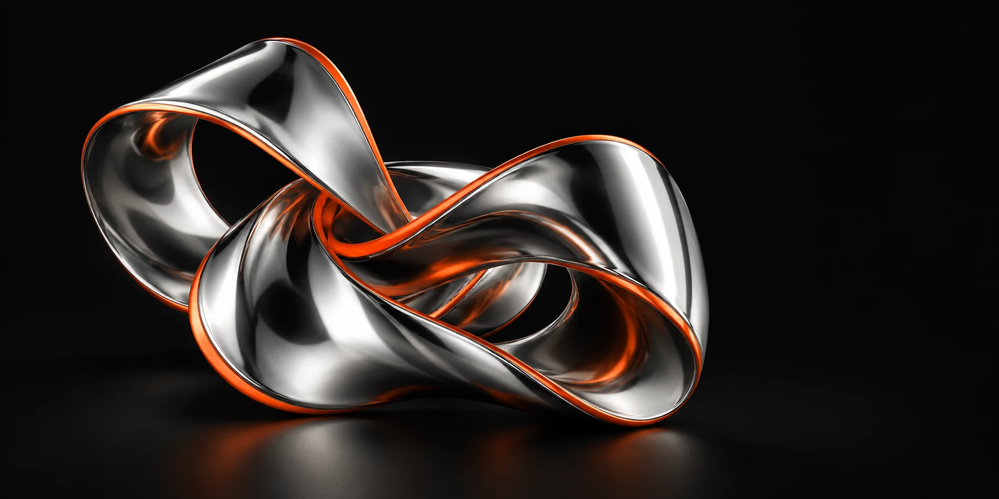

گالری آثار دیجیتال
مجموعهای مفهومی برای دیدن، انتخاب کردن و تجربهٔ یک فروشگاه کوچک.

اثر دیجیتال / مجموعهٔ مفهومی
نمای نزدیک / مجموعهٔ مفهومی
گاهی یک فرم ساده، نگاه تازهای میسازد.
این سبد برای نمایش تعامل ساخته شده است؛ پرداخت و سفارش واقعی انجام نمیشود.